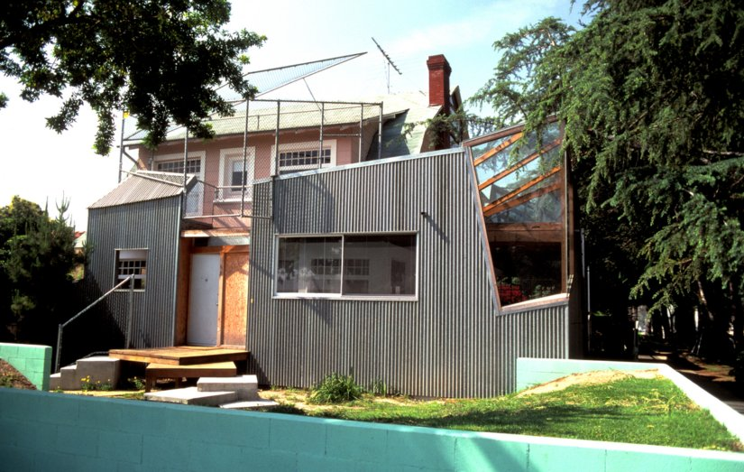

Frank Gehry has created some of the world’s most influential and iconic buildings. When he completed the Guggenheim Museum in Bilbao, Spain, in 1997, the veteran American architect Philip Johnson described it as “the greatest building of our time.” Over the past decade, Gehry has dazzled the world with such extraordinary creations as the Disney Concert Hall in Los Angeles, the New York by Gehry apartment building in New York City, and the New World Symphony Concert Hall in Miami. We have met him in his house of Santa Monica, California.
Who has been the biggest influence on your life ?
One of my greatest influences is the Italian artist Gian Lorenzo Bernini. The first time I saw his sculpture of Saint Teresa was in 1960. You can only see it during Mass and in order to see the little chapel it’s in, you have to get to the front pew and lean forward. I don’t know how to do the crossing myself very well. The young priest was howling with laughter when he saw me in the front row, trying to kneel when everyone else kneels, but doing it wrong.
What advice would you give to young architects ?
The best advice I’ve received is to be yourself. The best artists do that. People look over their shoulders too much. I tell kids that come to Yale, where I’ve taught every other year since 1978, to find your own way because then you’re the only expert. Some people might not like what you do, but still, you’re the only expert.
It's like a love affair
You have designed thousands of buildings what is your greatest achievement ?
If I think of my greatest achievement, it's like a love affair: You're always excited about the building you're working on. So right now it's 8 Spruce St., but next month it will be something else.
You also have designed an astonishing home for you and your family, what makes a good house ?
A well-designed home has to be very comfortable. I can’t stand the aesthetes, the minimal thing. I can’t live that way. My home has to be filled with stuff—mostly paintings, sculpture, my fish lamps, cardboard furniture, lots of books. I couldn’t live in the Farnsworth House.
When you don't work, how do you spend your spare time ?
My hobby is sailing. I have a Beneteau First 44.7 sailboat that I keep in Marina del Rey. I just day sail. It relaxes me like nothing else. When you're sailing, things change every second so you've got to be on your toes. I love that.
We have heard that you are a music fan, is that true ?
I love music. I flew to Milan the other night to hear Daniel Barenboim play Schubert and it was so beautiful, even though La Scala’s acoustics aren’t that great. I don’t listen to music when I work, but I do go to a lot of concerts.
A conductor I love is “the Dude,” Gustavo Dudamel, because he’s come to our building . I also love Esa-Pekka Salonen and Pierre Boulez. When I first saw Boulez conduct it was the famous “rug concert.” He had the seats removed from Philharmonic Hall and put rugs out. I sat on the rugs and watched him conduct. He keeps his arms within this very small space. I’d never seen somebody express passion so simply. Conductors usually wave and move so much, but this guy had it all inside.
What is the next project you are working on ?
At any given moment, I'm working on 20 projects, in stages ranging from conceptual to construction.
You are now 87, do you plan to retire ?
I can't retire, 87, it's too young.
-- Interview by Jackie CoopermanShare
Born
Nationality
Canadian, AmericanOccupation
ArchitectAwards
Website
foga.com The Amethyst Hotel
The Amethyst Hotel
 The Floating Seahorse
The Floating Seahorse